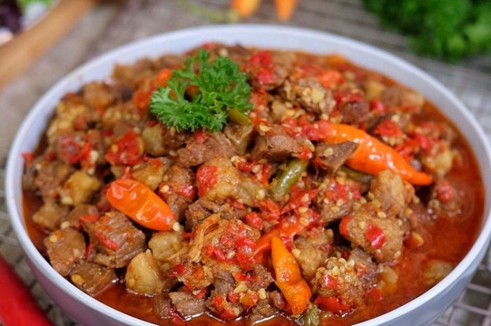
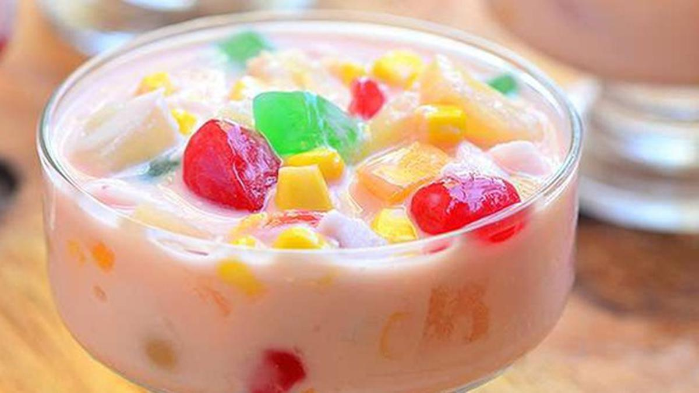
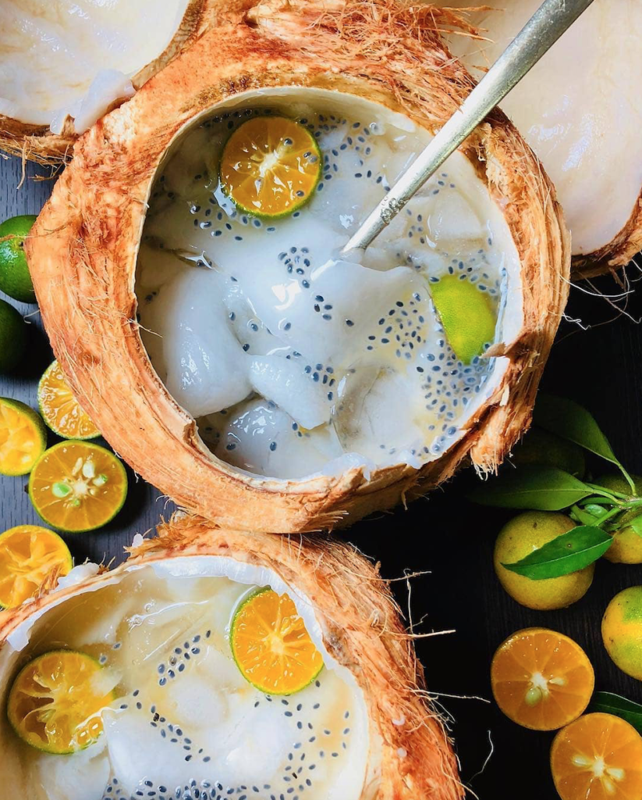
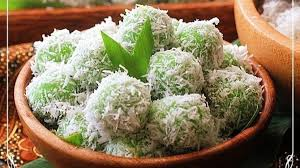
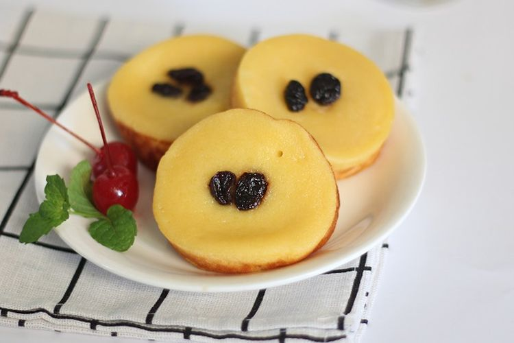

Resep Masakan Nusantara
Indonesia memiliki keberagaman kuliner dengan cita rasa yang khas bumbu daerahnya. Kuliner Indonesia dikenal dengan rasanya yang nikmat dan lezat.Bumbu rempah khas Indonesia membuat masakan memliki ciri khas tersendiri. Tidak hanya orang Indonesia saja yang menyukai masakan nusantara. Banyak juga wisatawan dari berbagai penjuru dunia yang menyukai makanan khas dari Indonesia
Gulai Kambing

Bahan-bahan Gulai Kambing:
- 450 gram daging kambing, dipotong dadu
- 1 liter santan
- 2 butir cengkeh
- 1 buah kapulaga
- 1 batang serai, memarkan
- 2 buah daun salam
- 1/2 sendok teh garam
- 1 sendok teh gula
- Minyak goreng secukupnya
- Bawang goreng secukupnya
Bumbu halus Gulai Kambing:
- 6 siung bawang merah
- 3 siung bawang putih
- 2 sentimeter jahe
- 2 sentimeter kunyit
- 1/4 sendok teh pala bubuk
Cara Membuat Gulai Kambing:
Panaskan minyak di wajan, tumis bumbu halus sampai harum. Masukkan serai dan daun salam, tumis hingga agak layu.
Masukkan daging kambing. Tumis lagi sampai daging kambing terasa empuk. Lalu, tuang santai sambil diaduk dan biarkan hingga mendidih.
Tambahkan cengkeh, kapulaga, garam, dan gula. Aduk rata hingga bumbu meresap.
Didihkan kembali kuah gulai, tunggu hingga daging kambing semakin empuk.
Angkat dan sajikan, lalu tambahkan taburan bawang goreng.
Oseng Mercon

Bahan-bahan:
- 500 gr daging sapi tetelan
- 3 daun salam
- 3 daun jeruk
- 2 batang serai
- 5 rawit utuh
- jahe geprek
- lengkuas geprek
- kaldu jamur merang
- gula merah
Bumbu halus:
- 8 bawang merah
- 6 bawang putih
- 8 cabai merah keriting
- 16 cabai rawit
Cara memasak:
- Rebus atau presto daging sampai empuk dan air kaldu dagingnya jangan dibuang
- Tumis bumbu halus sampai harum, masukkan salam, serai, daun jeruk, lengkuas dan jahe.
- Masukkan potongan daging dan sedikit air kaldunya lalu oseng sampai bumbu meresap.
- Lalu beri kaldu jamur, garam, gula merah, rawit utuh dan tutup wajan, kemudian masak sampai air meresap.
- Tunggu hingga matang dan siap disajikan.
Resep Minuman Nusantara
Tidak hanya makanan, Indonesia juga memiliki berbagai macam kuliner minuman khas nusantara yang digemari oleh banyak orang. Minuman khas nusantara kerap dihidangkan saat ada acara,misalnya ketika momen penikahan. Kamu pun bisa membuat sendiri minuman khas nusantara ini di rumah loh.
Es Buah Pelangi

Bahan-bahan:
- 4 buah alpukat
- 2 buah Mangga
- Jelly strawberry
- Jelly degan
- Krimer kental manis
- Gula
- Air es
- Biji chia seed
Cara membuat:
Potong buah-buahan kedalam ukuran kecil. Potongan ini bisa kamu sesuaikan dengan selera.
Lalu, buat jelly dari bahan yang sudah jadi. Biasanya, cara memasak jelly ini cukup mudah. Kamu hanya perlu mencampurkannya dengan air. Setelah jelly jadi, kamu bisa dinginkan terlebih dahulu.
Masukkan potongan buah-buahan dan air es ke dalam mangkuk. Lalu, campurkan dengan gula dan krimer.
Es buah pelangi siap disajikan.
Es Degan

Bahan-bahan:
- Kelapa muda
- Air kelapa
- Susu bubuk atau kental manis
- Es batu
- Sirup
Cara membuat es degan:
- Ambil bagian kelapa muda dengan sendok atau pengerok, sisihkan
- Tuang air kelapa pada wadah, tambahkan susu, sirup, aduk rata
- Siapkan gelas, masukan es batu dan masukan kelapa beserta airnya bersamaan
Resep Kue Nusantara
Kue khas nusantara ini tidak pernah sepi penggemar. Kue selalu diburu oleh banyak orang untuk dijadikan suguhan dalam berbagai acara baik formal maupun non formal. Berikut adalah beberapa resep kue khas nusantara. Selenegkapnya simak berikut ini
Klepon

Bahan-bahan klepon :
- 200 gr tepung ketan putih
- 1 sdm tepung tapioka
- Air sari pandan betawi, secukupnya
- Perisa pandan (pengganti air sari pandan)
- Garam secukupnya
- Gula merah yang disisir, secukupnya
- Parutan kelapa, secukupnya
- 3 helai daun pandan
- Air untuk merebus, secukupnya
Cara membuat klepon:
- Campur tepung ketan dan tepung tapioka, aduk menggunakan whisk agar tercampur rata.
- Campurkan air sari pandan atau perisa dengan air putih di wadah lain.
- Masukan campuran air ke campuran tepung sedikit demi sedikit sambil diaduk, sampai adonan tidak lengket dan bisa dibentuk.
- Iris tipis gula merah, kemudian gulung adonan sesuai selera dan masukan gula merah di tengah-tengah adonan, lalu bentuk sesuai kreasi.
- Masak air panas di panci sampai mendidih.
- Masukkan klepon yang sudah dibentuk ke dalam panci dan tunggu sampai muncul ke permukaan.
- Siapkan parutan kelapa dan dengan garam secukupnya.
- Jika klepon sudah mengambang, angkat, gulingkan ke kelapa yang sudah diparut.
- Sajikan dan nikmati.
Kue Lumpur Pisang

Bahan-bahan:
- 75 gram tepung terigu
- 1/2 sdt baking powder
- 1/2 sdt vanili bubuk
- 3 sdm margarin
- 150 gram pisang raja matang,haluskan
- 2 butir telur, pisahkan putih dan kuningnya
- 300 ml santan kental
- 200 ml air
- 1 sdt garam
Cara membuat:
- Ayak tepung terigu dan baking powder. Tambahkan vanili bubuk. Sisihkan.
- Rebus air dan tambahkan margarin hingga mencair. Aduk-aduk hingga rata.
- Masukan tepung terigu, baking powder, vanili bubuk, dan pisang raja. Campurkan hingga merata
- Masukan telur dan tuang santan sambil diaduk aduk.
- Siapkan cetakan kue lumpur, olesi dengan margarin. Masukan dua sendok makan adonan kue lumpur ke cetakan.
- Panggang dengan api kompor sedang. Angkat dan sajikan
Tentang Kami
Kuliner Nusantara adalah website yang menyajikan kumpulan resep aneka masakan khas nusantara, untuk hidangan sehari-hari maupun hidangan istimewa di hari yang spesial.
Semua resep yang disajikan di Kuliner Nusantara dapat dipastikan telah teruji dapur. Bersama kuliner nusantara, kami berharap kumpulan resep masakan yang kami sajikan dapat menginspirasi dan membantu anda untuk menyiapkan hidangan makanan yang istimewa, bervariasi, serta mudah dipraktikkan.
Bagi Anda yang ingin memberikan saran atau masukkan yang membangun, bisa disampaikan melalui kontak yang telah kami sediakan.
Jika Anda merasa artikel kami bermanfaat, Anda juga dapat membagikannya melalui facebook, twitter, pinterest, google+, dan sosial media lainnya agar semakin banyak orang yang terinspirasi untuk memasak berbagai variasi resep masakan yang mudah dan menyenangkan.